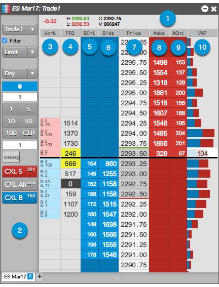

The MD Trader display consists of the following:

- Header Panel — Shows market data for the selected instrument for the current trading session, and also shows your position if the order pane is hidden.
- Order Entry Panel — Contains buttons and selectors for configuring, submitting, and canceling orders. Also shows your position.
- Work column — Displays the sum of all working orders at each price. Working buy orders are highlighted in blue, and working sell orders are highlighted in red.
- PIQ column — Shows your position in queue (PIQ).
- BCnt column — Shows the number of orders comprising the total bid quantity at a price level.
- Bids column — Show the aggregated bid quantities for a corresponding price level.
- Price column — Displays prices for the instrument.
- Asks column — Show the aggregated ask quantities for a corresponding price level.
- ACnt column — Shows the number of orders comprising the total ask quantity at a price level.
- VAP column — Displays volume-at-price data for each price level in addition to the last traded quantity (LTQ) at the best bid or ask price. If VAP is not shown, MD Trader shows the LTQ column and displays only the last traded quantity.
- Tabs — Allow you to add instruments to a single MD Trader. Each tab shows the contract month and position in that contract.
Display configuration
In MD Trader, you can configure the display of the following: